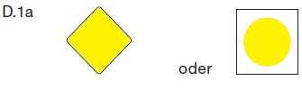

Binnenschifffahrtsstraflen-Ordnung (BinSchStrO) § 6.25Durchfahrt unter festen Brücken
1.
Ist eine bestimmte Öffnung fester Brücken durch ein allgemeines Zeichen A.1 (Anlage 7) gekennzeichnet, ist das Durchfahren dieser Öffnung verboten.
2.
Ist eine bestimmte Öffnung fester Brücken gekennzeichnet
a)
durch das Zeichen D.1a (Anlage 7)

oder
b)
durch das Zeichen D.1b (Anlage 7) – angebracht über der Brückenöffnung –
wird empfohlen, vorzugsweise diese Öffnung zu benutzen. Ist die Öffnung nach Satz 1 Buchstabe a gekennzeichnet, ist die Durchfahrt in beiden Richtungen erlaubt; ist sie nach Satz 1 Buchstabe b gekennzeichnet, ist die Durchfahrt in Gegenrichtung verboten.
3.
Ist eine bestimmte Öffnung fester Brücken nach Nummer 2 gekennzeichnet, kann die Schifffahrt die nicht gekennzeichneten Öffnungen auf eigene Gefahr benutzen.